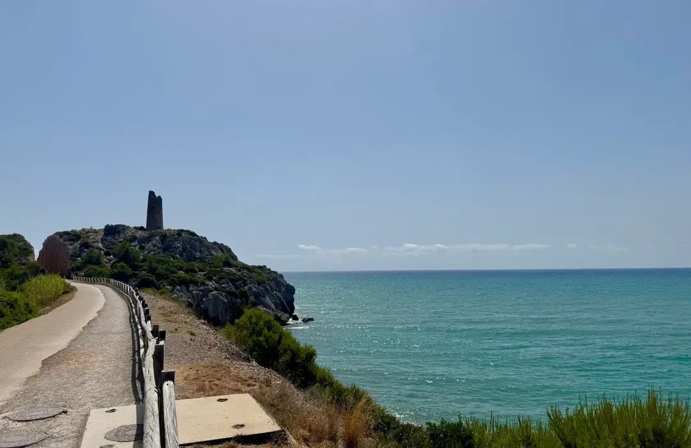
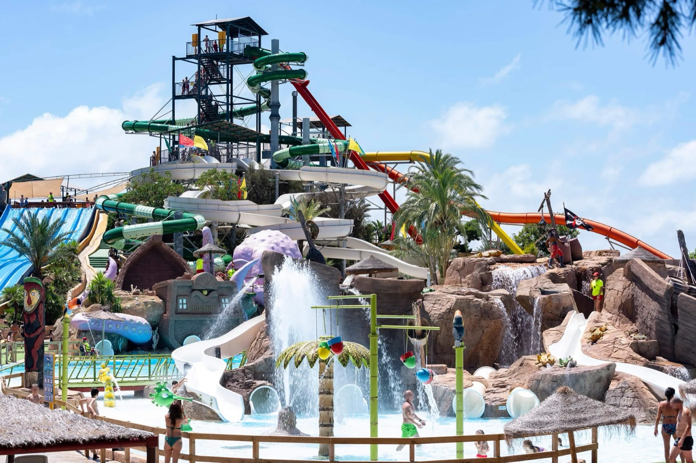
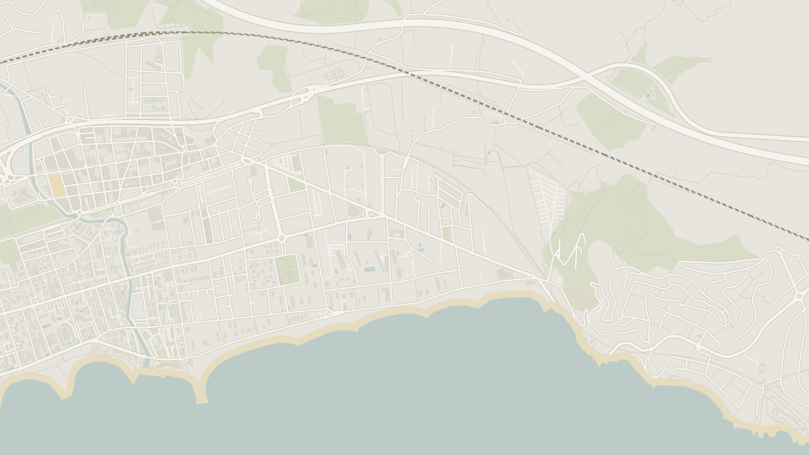
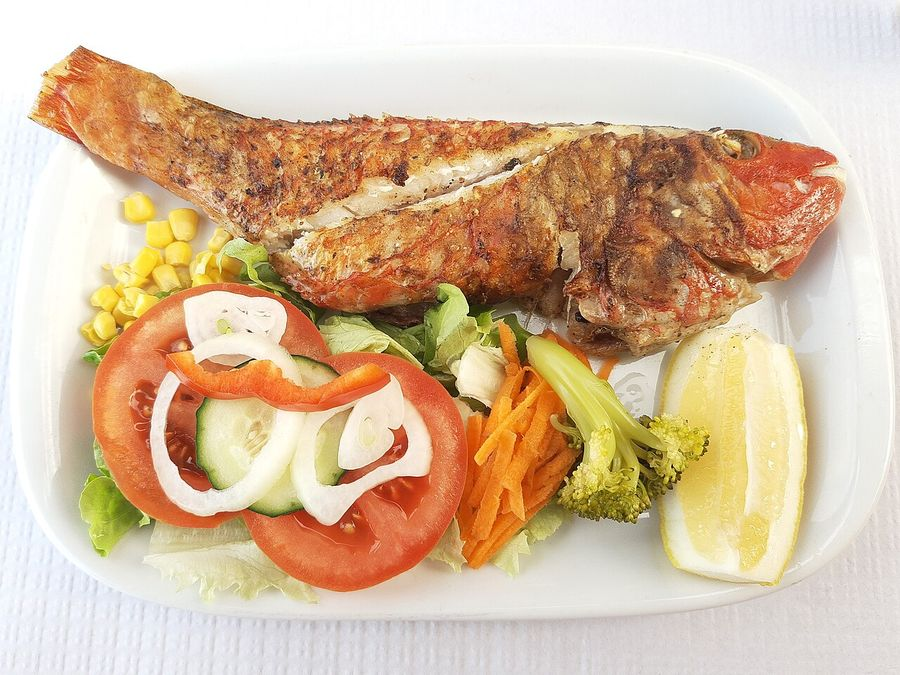
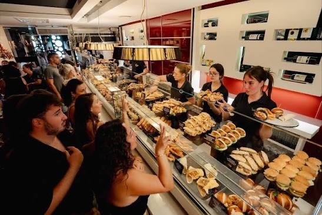
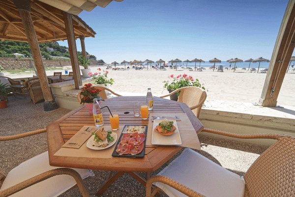
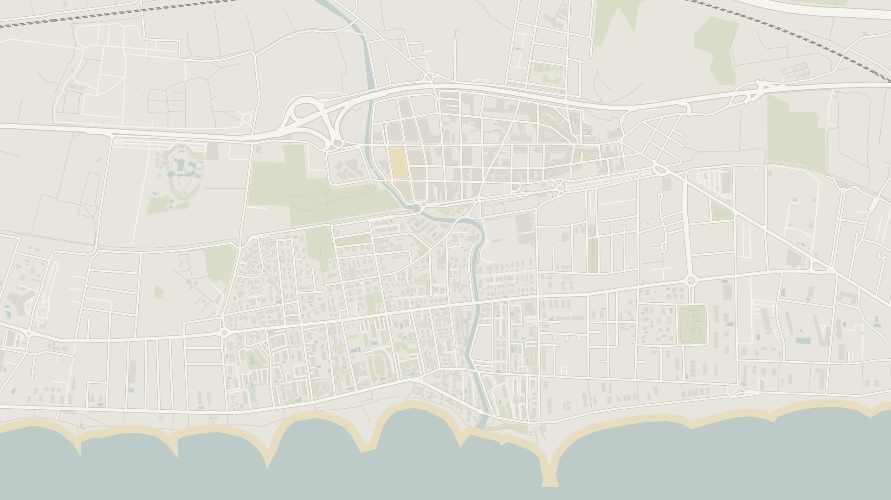
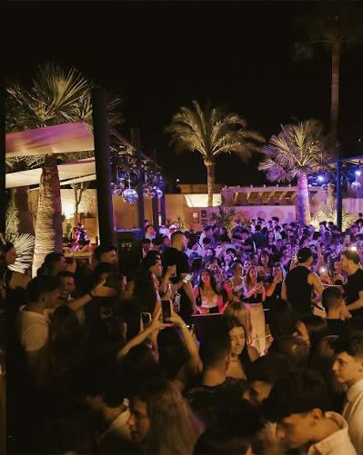
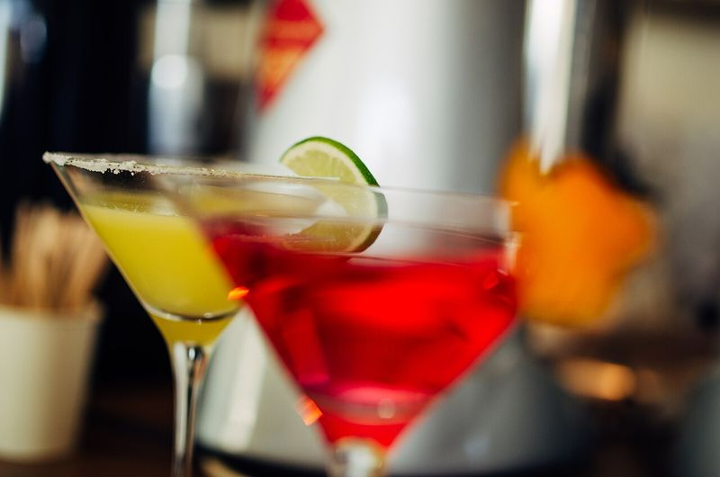
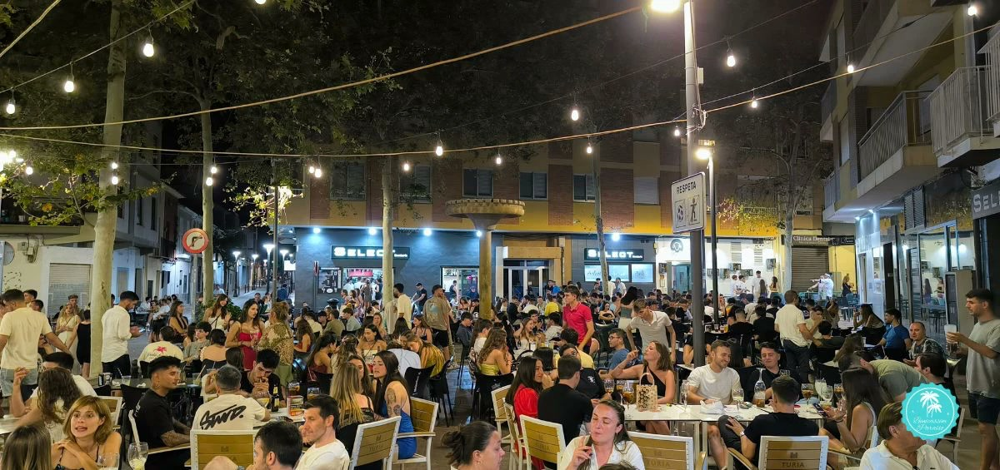

Présenter sa ville · jeudi 26 novembre
Benicasim
La ville où je passe mes étés
Au programme
- 1 Où est Benicasim ?
- 2 Que faire à Benicasim ?
- 3 Des lieux à découvrir
- 4 Ma journée parfaite
- 5 La fête et les festivals
- 6 Les plus et les moins
- 7 Mon bon plan

2 · Que faire à Benicasim ?
Entre la mer et la montagne
- la plage et la montagne
- des bars et des restaurants
- des soirées pleines de monde

2 · Que faire à Benicasim ?
Du soleil presque toute l'année
- un climat méditerranéen
- des étés chauds, des hivers doux
la mer d'un côté,
la montagne de l'autre
3 · Des lieux à découvrir
Trois endroits à ne pas manquer
-

Le Desert de les Palmes
un parc naturel et un monastère
-

La Vía Verde
une ancienne voie ferrée au bord de la mer
-

Aquarama
un parc aquatique avec des toboggans

-

Marabrasadu poisson à la braise -

Domatortilla, croquettes et tapas -


Nou Cafèd'énormes bocadillos -

Vin Upmontaditos au comptoir -

Terraza Voramarface à la mer -

Masía Bellverune masia à Orpesa -

Taj Mahal le kebab Mon vrai QG pendant des années
3 · Des lieux à découvrir
Mes restaurants préférés
Photos d'illustration pour Marabrasa, Doma et le Taj Mahal
5 · La fête
Et la fête… c'est quel jour ?
- lundisi on veut
- mardi
- mercrediaussi
- jeudiet même le jeudi !
- vendredi
- samedi
- dimancheaussi un bon jour
Toute la semaine !



-

La Santadiscothèque -

Tropical Surf Barbar à cocktails -

Le Selectbar, sur la place des Dolors -
Piropopub, place des Dolors -
La Tremendadiscothèque -
Bufamboclub d'été -

Casablancadiscothèque -
Zalêbar de plage -
Le site des festivalsle SanSan, le FIB et le Rototom
5 · La fête
Discothèques et pubs
Photos d'illustration
5 · La fête
La ville des festivals
-
À Pâques
le SanSan, pop et indie
-
Mi-juillet
le FIB, pop, rock et électro depuis 1995
-

En août
le Rototom, le plus grand festival de reggae du monde
Près de Benicasim, on trouve l'un des meilleurs festivals de reggaeton.

7 · Mon bon plan
La Vía Verde à vélo, au coucher du soleil
- 5,7 km entre Benicasim et Oropesa
- des tunnels et des falaises
- des criques pour se baigner
- des villas et des restaurants
Images : Google Earth · Photos : Wikimedia Commons
Benicasim
Présenter sa ville · oral de FLE
←→espaceavancer Nnotes Pprésentateur Tchrono Bécran noir Fplein écran Iinfo
Vols : Google Earth Studio (Data SIO, NOAA, U.S. Navy, Landsat / Copernicus, Airbus). Limites : IGN via geoBoundaries et OpenStreetMap. Photos : Wikimedia Commons, avec auteur et licence sur la dernière diapositive.